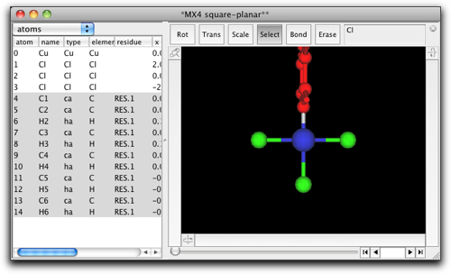
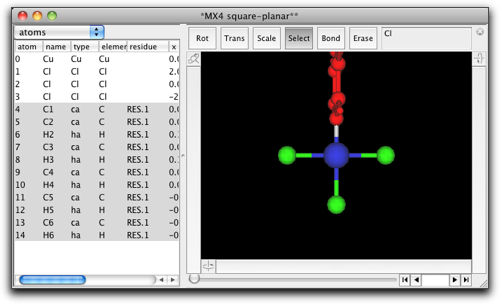
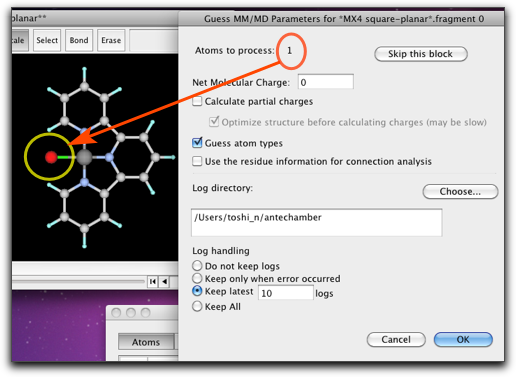
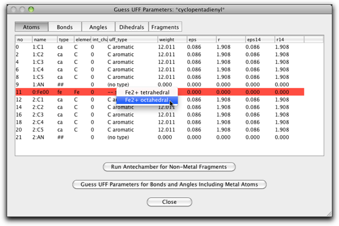

第八段階：配位化合物のMM/MD計算
1. UFF (Universal Force Field) パラメータを使う
配位化合物の分子モデル作成にはいろいろ問題があります。主な問題は、金属原子の分子力学パラメータが用意されていないことです。一つの合理的な方法は、Rappéらによって提案された UFF (universal force field) パラメータを使うことです (J. Am. Chem. Soc. 114, 10024-10035 (1992))。 分子構造から UFF パラメータを見積もるのはやや複雑な作業ですが、プログラムによって自動化することは可能です。以下に、UFF を用いた配位化合物のモデルングに Molby がどのように利用できるかを示します。
例として、(terpy)PtCl の分子モデルを作ってみましょう。terpy は 2,2':6',2"-terpyridine です。
最初に分子構造を作らなくてはいけません。一つの方法は、まず有機分子の部分 (terpy) を作成し、金属を後から付け加えることです。ここでは、別の方法を使ってみます。つまり、最初に金属回りの配位構造から始め、あとで配位子を付け加えます。一般的には、こちらの方が配位化合物のモデリングには適しています。
"File" メニューから "Open Predefined..." を選び、下のように "MX4 square-planar" を見つけてください。

平面四配位の "CuCl4" 構造が現れます。

"Select" ツールを選び、塩素原子の１つをダブルクリックして、"C6H5" とタイプします。
 

金属原子にフェニル基が結合しました。環はこの向きではいけませんので、金属-炭素結合を選択して、フェニル基を回転させ、環が金属・配位子平面と同一平面になるようにします。

他の２つの塩素原子も同様にフェニル基に置き換えます。
水素原子を削除して炭素−炭素結合を作成します。それから、金属に結合している炭素原子をダブルクリックして、"N"原子に変えます。金属原子をダブルクリックして、 "Pt" に変えます。

これで分子構造はできあがりました。次に、分子力学パラメータを設定します。"MM/MD"メニューから "Guess UFF Parameters..." コマンドを選択します。
下のようなダイアログが開きます。表に原子が並んでいますが、この原子は (1) 金属原子、(2) 金属原子に結合している原子、(3) (2) の原子のいずれかに結合している原子、のどれかです。言い換えれば、金属原子から「結合２つ分」以内の原子が表示されています。Pt 原子の行は赤色で表示されています。分子力学パラメータが定義されていないことを表しています。配位子の原子はすでに分子力学パラメータを持っていますが、よく見ると、間違っているものもあります。例えば、ピリジンの N 原子は "n3" タイプになっていますが、これは sp3 窒素です。

UFF パラメータの作成はいくつかの段階を要します。最初に、配位子の原子タイプを正しく設定します。この作業は、第六段階 で行ったのとほぼ同じですが、今回は金属原子を除いた部分構造について Antechamber を実行する必要があります。"Run Antechamber for Non-Metal Fragment" ボタンを押すと、この作業が自動的に行われます。各部分構造について、電荷を与える必要があるかも知れません。例えば、カテコラト配位子を使っているなら、電荷は -2 となります。

Antechamber を走らせる部分構造は、メインウィンドウで選択されて表示されます。ここの例では、１番目の部分構造は塩素原子１個だけを含み、２番目の部分構造はターピリジンになります。

Antechamber を走らせると、表は下のようになります。"type" 列の値が変わっていることに注意してください。
次に、各原子の "UFF type" を設定します。前の段階で UFF type を仮に設定してありますが、一通り見直して、必要なら変更してください。UFF type はポップアップメニューで選択することができます。

今度は、金属原子のパラメータを設定します。"Guess UFF Parameters for Bonds and Angles Including Metal Atoms" ボタンを押してください。

"Bonds" ページを開いて、"k" と "r0" の列を見てください。UFF 分子力場から予測された「力の定数」と「結合長」が入っているはずです。何らかの理由で、値が適切ではないと考えた場合は、手動で変更することもできます。

"Angles" ページも同じようにチェックしてください。"k" と "a0" の列に「力の定数」と「結合角」が入っています。金属中心が、平面正方形、または八面体構造の場合は、"cis" と "trans" の角度があります。プログラムは、現在の結合角が 135度よりも大きければ "trans" とみなし、小さければ "cis" とみなします。現在の構造が理想的な構造から離れている場合は、角度のパラメータを注意深くチェックしてください。
このダイアログを閉じて、MM/MD 計算を通常のように進めます。例えば、エネルギー最小化を行うと、下のような構造が得られます。

2. 金属-π 結合を持つ化合物
分子力学計算では、金属-π結合を持つ化合物の取り扱いも厄介です。Molby は、Doman らの方法 (J. Am. Chem. Soc. 114, 7262-7272 (1992)) に準じて金属-π結合の分子力学計算を実装しています。ここでは、フェロセンの分子モデルを作成してみます。
"Open Predefined" から "cyclopentadienyl" を選びます。

５つの炭素原子を選択し、"Create Pi Anchor" メニューコマンドを実行します。

"Pi anchor" とは、「親」原子の重心を座標とする仮想的な原子です。今回は、シクロペンタジエニル環の５つの炭素原子（上で選択したもの）が pi anchor の親になります。スクリーン上では、pi anchor は緑色の小さな球で表し、親原子とは緑色の半透明の棒でつないで表示されます。

環を回転させて、横から見た向きにします。Pi anchor はぎりぎり見えるようにしておきます。Pi anchor から結合を出して、新しい原子を作ります。新しい原子を Fe に変えます。

シクロペンタジエニル環と pi anchor をコピーして、同じウィンドウ内にペーストします。新しい環を Fe 原子をはさんで反対側に移動し、新しい pi anchor と Fe 原子を結合させます。

最後に、２つの pi anchor の間に結合を作ります。これは、環の回転障壁を正しく見積もるために必要になります。Anchor 同士の結合は、半透明の緑色で示されます。
環の回転は「環の原子-pi anchor-金属-他の原子」という二面角項で表されます。メタロセンの場合、「他の原子」はもう一つの pi anchor になります。ところが、直線型のメタロセンだと、「pi anchor-金属-pi anchor」の角度は常に 180°付近であるため、二面角を正しく定義することができません。このため、直線型メタロセンでは、特別に「環の原子-pi anchor-pi anchor-環の原子」という二面角で環の回転を表現します。この理由で、２つの pi anchor の間に結合を作る必要があるのです。曲がったメタロセン (Cp2TiCl2 など) や、ハーフサンドイッチ型の錯体では、このような扱いは不必要です。

ここからは、前と同じように UFF のダイアログを使うことが出来ます。今回は、"non-metal fragments" の計算は省略します。Antechamber はシクロペンタジエニルアニオンを正しく取り扱うことができないためです。私たちのシクロペンタジエニル環はすでに正しい原子タイプを持っていますので、これをそのまま使います。
Fe の UFF タイプを "Fe2+ octahedral" に変更します。

"Bonds" ラベルをクリックし、"##-fe" または "fe-##" タイプの結合の "r0" パラメータの値を変更します（"##" は pi anchor を意味します）。この値は金属-π結合の距離です。フェロセンの場合は 1.66 Å になります。

"Angles" ページも編集が必要です。今回は手動で金属原子を作成したため、角度が正しくなっていないからです。"fe-##-ca" タイプの角度は 90.0（上から１０行分）、"##-fe-##" タイプの角度は 180.0（一番下の行）にします。

"Guess UFF Parameters..." ボタンを押して、UFF パラメータの計算を行います。

これで MM/MD 計算を試すことができます。エネルギー最小化を行うと、重なり型の配置が得られます。298K で MD を行うと、Cp 環がこの温度で自由回転していることがわかります。